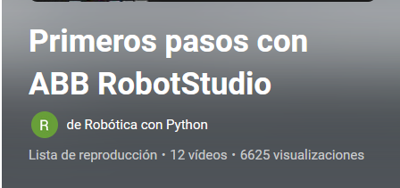

VÍDEOS DE ROBOTICA
 robotica
robotica
 Videos
Videos Migas de pan
Migas de pan
 Prácticas
Prácticas
Apilamiento de cajas realizadas por un robot
Estación 1
Curso Robotstudio
Creación de una herramienta y rutas
Creación de una herramienta con flexpendant
Prácticas de RobotStudio
Youtube, Lista de reproducción de Juan Carlos Martín Castillo
-
3.RobotStudio: Actividad 2 (Configuración de una controladora virtual)
-
5.RobotStudio: Actividad 4 (Configuración básica de la herramienta)
-
6.RobotStudio: Actividad 4b - (Configuración avanzada de herramientas)
-
7.RobotStudio: Actividad 5 (Programación básica de posiciones y trayectorias)
-
9.RobotStudio: Actividad 6 - Iniciación al uso de los WorkObjects.
-
11.RobotStudio: Actividad 7 (Aplicación práctica de los WorkObjects- Instrucciones de movimiento)
-
13.RobotStudio: Actividad 9 (Programación de trayectorias con FlexPendant)
-
14.RobotStudio: Actividad 10-(Iniciación a la programación en RAPID)
-
15.RobotStudio: Actividad11 (Saltos, variables y condicionales)
-
16.RobotStudio: Actividad 12 (Instrucciones MoveJ, MoveL y MoveC)
-
19.RobotStudio: Comunicación con WinCC Flexible mediante OPC Server
-
20.RobotStudio: Programación y configuración con FlexPendant (I)
-
21.RobotStudio: Programación y configuración con FlexPendant (II)
-
23.RobotStudio: Detener o reanudar el movimiento de un robot con entradas digitales.
-
26.1-Proyecto con RobotStudio: Programando y copiando trayectorias
-
27.2- Proyecto con RobotStudio: Uso de If-Then, For, CallByVar, TPReadNumb
-
28.3-Proyecto RobotStudio: Activar salidas digitales con SetDO
-
32.RobotStudio: Actividad pick and place con SmartComponets personalizados
Prácticas de RobotStudio
Youtube, Lista de reproducción de Agustín Cañete López
RobotStudio - Práctica de robótica nº 1: Trayectorias básicas
RobotStudio - Práctica de robótica nº 2: Trayectorias complejas
Robot Studio - Práctica de robótica nº 2C: Creación de una herramienta
RobotStudio - Práctica de robótica nº 3: Programación básica desde el flexpendant
RobotStudio - Práctica de robótica nº 4: Saltos, variables y condicionantes
RobotStudio - Práctica robótica nº 5 Trayectoria sobre figura irregular
RobotStudio - Práctica robótica nº 6 Entradas digitales del sistema
RobotStudio - Práctica robótica nº 7 - Entradas y salidas digitales del sistema
RobotStudio - Práctica robótica nº 8 Realización de pausas y parada con señales del sistema
RobotStudio - Práctica robótica nº 9 Utilización de la función offset
Robot Studio - Práctica de robótica nº 10 Señales específicas del sistema
RobotStudio - Práctica de robótica nº 11 Utilizando relojes del sistema
RobotStudio - Práctica de robótica nº 12 Gestión de interrupciones
RobotStudio - Practica de robótica nº 13 Colisiones
RobotStudio - Práctica de robótica nº 14A: Pick and place mediante objetos inteligentes
RobotStudio - Práctica de robótica nº 14B: Pick and place con objetos inteligentes
RobotStudio - Práctica de robótica nº 14C Pick and place control desde rapid
RobotStudio - Práctica robótica nº 15 Pick and place mediante una garra con movimiento
RobotStudio - Práctica de robótica nº 16 Movimiento de objetos mediante componentes inteligentes
RobotStudio- Práctica de robótica nº 17 Trabajo colaborativo de dos robots
RobotStudio - Práctica nº 18 Trabajando con el robot araña IRB320
Crear WObject con flexpendat
